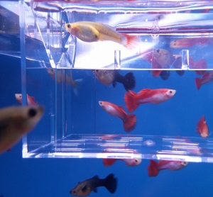

Porodnička
K čemu slouží?
- Oddělení březích samiček
- Ochrana mláďat před sežráním
- Separace nemocných nebo zraněných ryb
- Cena: 100 - 200 Kč
- Je nutná? Při množení ryb je nezbytná
Porodničky v akvaristice slouží k oddělení a ochraně mladých ryb (potěrů) nebo březích samiček, zejména u druhů, které rodí
živá mláďata (tzv. živorodky, např. gupky, mečovky, platy nebo molly). Jsou to speciální oddělené prostory v akváriu, často
malé plastové nebo síťové boxy, které se umísťují do hlavní nádrže nebo do separátního akvária.
Oddělení březích samiček: Březí samičky mohou být umístěny do porodničky těsně před porodem, aby byly v klidném prostředí
a jejich mláďata nebyla ihned ohrožena ostatními rybami.
Ochrana mláďat před sežráním: Většina ryb (včetně rodičů) má tendenci považovat potěr za potravu. Porodnička chrání
nově narozené rybky tím, že je odděluje od ostatních obyvatel akvária.
Separace nemocných nebo zraněných ryb: Kromě odchovu mláďat lze porodničku využít i pro izolaci nemocné nebo zraněné ryby,
která potřebuje speciální péči nebo ochranu před ostatními rybami.